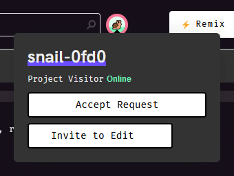

You can try Snail right in your browser! This practice page is available for a limited time, until either we're convinced that it's not a good experience or Glitch changes their embedding rules to make this impossible.
Done!
This remixes a project on Glitch, and you'll be using Snail from this project's terminal.
Completion criteria:
You have a practice area at (unset). Use the terminal at the right to work through these exercises.
Snail is already installed in this practice area. Let's run a command to test it out.
snail --version
Completion criteria:
We'll use an anonymous account.
snail auth anon
Then check that you're signed in by looking up your user ID.
snail whoami -n
Completion criteria:
Let's make a project for us to practice on.
(Here's a link to take a peek without remixing if you don't want to do that just now.)
While your practice area itself runs in a project, this will be a separate one. That simulates how you'd run Snail on your local computer, outside of the project you're working on.
Completion criteria:
Snail uses the presence of a special glitch Git remote to figure out what project you intend to interact with.
Set up a repository—we'll call it badge:
mkdir -p .data/badge cd .data/badge git init
Then add that Git remote (sample project name shown; use your own):
snail remote --help snail remote -p lively-indecisive-archeology git remote -v
Put the name of the project you just created after the -p.
Then, be prepared not to call that thing the "name" anymore.
In the Glitch API and in Snail's documentation, it's called the project's domain for some reason.
Weird that we call it the "domain," right?
You'd normally think that the "domain" would include the .glitch.me at the end.
But in this usage, it refers only to that first part.
Do the rest of this exercise from inside this repository that we've just set up. Do not run the code below instead:
echo "I solemnly swear that I'm not just skipping" echo "from code block to code block and I really" echo "did read the last paragraph."
Completion criteria:
glitch with a URL that looks like https://xxxxxxxx-xxxx-xxxx-xxxx-xxxxxxxxxxxx@api.glitch.com/git/lively-indecisive-archeologyThe template project is designed to be at a point where it needs some work done on it. Let's see what it's like.
snail web --help snail web app
This prints out the project's web URL. For this in-browser terminal, select the output by dragging and press Ctrl+Insert to copy it. Open that URL in a new tab.
Ouch, the site is really not in good shape. It only displays an error message, either "Site didn't respond" or "failed to start application."
Completion criteria:
You're signed in to Snail as an anonymous user, different from how you're signed in on a browser when you created the project. Because these are separate users, so far we've only been able to look but not touch. But it's clear now this project will need some work, so let's get write access.
We'll use the editor to invite your anonymous user account. Get the editor URL from Snail and open it in a browser:
snail web edit
Now request an invitation:
snail ot request-join --help snail ot request-join -r
Find the request on the top left of the editor and invite the user to join.

Let's see who can access the project now.
snail member --help snail member list
Completion criteria:
The error shown on the website doesn't tell us why the application didn't respond. We'll want to look at the logs for why this is happening:
snail logs --help snail logs
Then, reload the project's website and see what the project logs.
/app/server.js:38
.end(err.stack);
^
ReferenceError: err is not defined
Let's look there. We'll need a copy of the code though.
Completion criteria:
The Git repository is indeed a Git repository, no big surprise there. Go ahead and pull.
git pull glitch master
Completion criteria:
Now we can take a look at the code:
less -N server.js
The error happens here:
35 } catch (e) {
...
38 .end(err.stack);
This exercise is not about how to solve JavaScript problems or how to use command line text editors.
The code mistakenly uses err instead of e.
Here's a one-liner to edit in the fix, so we can get on with things:
sed -i '38s/err/e/' server.js
... and set up your Git user info (sample info shown; use your own):
git config user.name 'wh0' git config user.email 'none'
... and commit the change:
git commit -am "fix error reporting"
Completion criteria:
sed here
We need to set up the project to receive Git pushes to its current branch.
To set that, we run a git config command in the project container, i.e., not locally or in our practice area.
We can use Snail to run a command in the project:
snail exec --help snail exec -- receive.denyCurrentBranch updateInstead
Then push the change:
git push glitch master
... and have Glitch run the new version:
snail exec -- refresh
Now let's reload the project's website and have another look.
Completion criteria:
Error reporting should now work. It should now respond with a stack trace when we try to load the page and it fails. So let's see what that is.
Error: ENOENT: no such file or directory, open '.data/me.html'
...
at Server.<anonymous> (/app/server.js:13:23)
According to this, there's a file missing. The code that uses it is like this:
const me = fs.readFileSync('.data/me.html', 'utf-8').trim(); ... .end(`<!doctype html> ... I'm <span class="me">${me}</span>, and I completed ...
All we have to do is add a file with your name.
Completion criteria:
We can reasonably use Git to deploy code changes, but we normally wouldn't put data files under version control. Snail has other facilities for doing general file management. First let's enter an interactive shell to take a look around the project filesystem.
snail term --help snail term ls -al mkdir -p .data ls -al .data Ctrl-D
Here, the ls and mkdir are things you type while connected to the snail term session.
The .data directory might already exist.
Make a file that we'll upload:
git config user.name >/tmp/me.html
Snail hasn't settled on a best way to transfer files, but the rsync wrapper is pretty friendly.
Use the project domain as the "host" for rsync.
We'll use that (sample project domain shown; use your own):
snail rsync --help snail rsync -- /tmp/me.html lively-indecisive-archeology:.data
If you're like me, you'll have an urge to look again:
snail term ls -al .data Ctrl-D
Completion criteria:
me.html file is present in the project's .data directoryThis should be it for fixing up the project.
Go ahead and open the project website again. You'll now have a page to commemorate that you completed this practice exercise.
Completion criteria:
You're done!
This practice area is yours to keep.
If you continue to use it, be advised that files you create outside of the .data directory are public.
Prefer to create Git repositories inside the .data directory like we did in the exercise, so that the Git access token in the remote doesn't get exposed.
This side is reserved for a later part of the tutorial. You're almost there though.